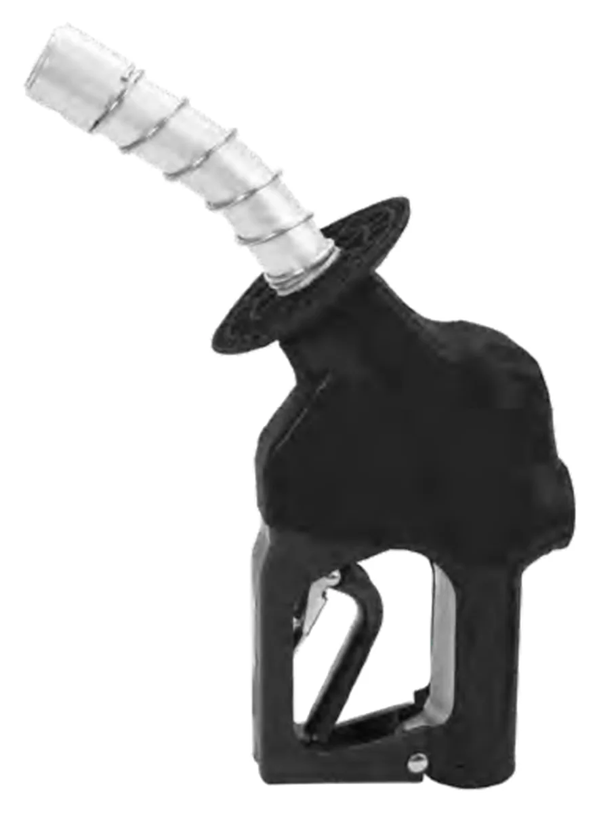

GROZ · Fuel & DEF Handling
Auto Shut-Off Safety Fuel Nozzles
CAT NR FCNA/0-1T/CG/N · ORD NR 45559
| CAT NR (catalogue number) | FCNA/0-1T/CG/N |
|---|---|
| ORD NR (order number) | 45559 |
| Box quantity | 12 |
| For use with | Diesel |
| Inlet thread | 1 |
| Max. flow rate | 100 26.45 |
| Spout dia. (ID) | 1 25 |
| Spout dia. (OD) | 1-3/16 30 |
| Spout type | Splash Guard Curved with spring , cuff & Splash Guard |
| Spring on | Yes |
Ask for a quote The catalogue PDF, page 286
“Ask for a quote” opens this product in the catalogue: add it to your quote and send it. Buyers from Africa, the Gulf and worldwide are welcome; prices in USD, EUR or INR.
From the GROZ Fluid Handling CC-07 catalogue. Not yet verified: these details were read from the printed catalogue automatically; check the catalogue page before ordering.